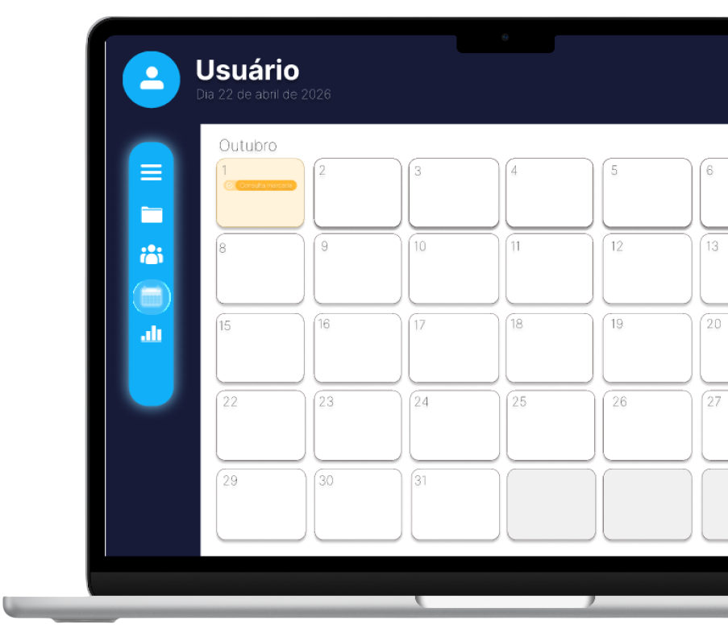

Guarde todos os seus exames e documentos médicos organizados em um único lugar.
Tenha uma conta para acompanhar a saúde de seus filhos de forma simples e segura.
Encontre unidades de saúde próximas e tenha informações importantes sempre à mão.
Organize todas as suas consultas, exames, vacinas e medicamentos em um único calendário inteligente. Receba lembretes automáticos para não esquecer seus compromissos e acompanhe sua saúde de forma simples.

O EasyCare é um aplicativo criado para facilitar a organização da saúde de forma prática, segura e acessível. A proposta é reunir em um único lugar informações importantes como exames, consultas, vacinas, medicamentos e lembretes de cuidados, evitando esquecimentos e tornando o acompanhamento da saúde muito mais simples.
Compartilhe os dados de saúde com pessoas de confiança de forma simples e segura.